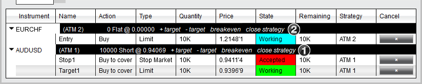

|
<< Click to Display Table of Contents >> Managing Positions |


|
Managing Positions
|
<< Click to Display Table of Contents >> Managing Positions |
|
Clicking on the "Close" button with your left mouse button will close the current position, as well as cancel any working orders associated to the instrument/account combination.
Clicking on this button with your middle mouse button (scroll wheel) will close the selected active ATM Strategy only. This means that the position size of the ATM Strategy will be closed and any working orders associated to that ATM Strategy will be cancelled.
Please see the help topic on Closing a Position or ATM Strategy for more information on the mechanics behind closing various types of positions.
 Understanding the FX Board's ATM Strategy position controls
Understanding the FX Board's ATM Strategy position controls
Closing an ATM StrategyIf you have an open position protected by an active ATM Strategy, or have submitted an entry order with an active ATM Strategy, you can close the strategy by selecting the "close strategy" button on the order grid of the FX Board.

BreakevenClicking on the "breakeven" button with your left mouse button will adjust any ATM Strategy stop orders in the opposite direction of your open position (if position is long it will adjust stop sell orders) to the positions average entry price.
Adding or Removing ATM Strategy TargetsIf you have an active ATM Strategy displayed in the FX Board window, you can add or remove targets. For example, you may have a 2 contract position with 1 Stop Loss and Profit Target for 2 contracts each. You may decide to split this target (add target) so that you can exit the final contract at a higher price. Pressing the "+ target" button on an active ATM Strategy will add an addition target, while pressing the "- target" button will remove a target.
How to Scale in or out of an Active ATM StrategyWhen you have an active ATM Strategy selected in the strategy control list, orders submitted scale into or out of the strategy. Once filled or partially filled, the existing stop loss and profit target orders are modified to reflect the new position strategy size. |